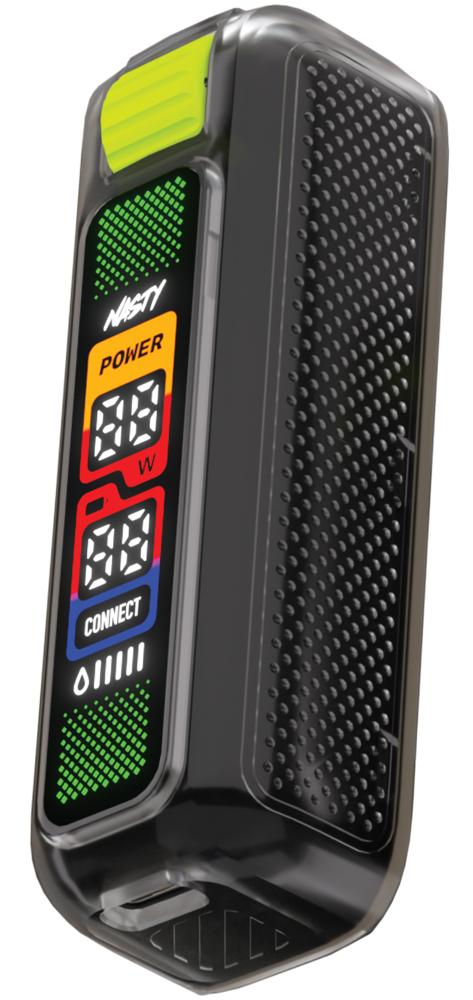

Project 03 — Versa X battery + pods picker
The thinking is simple: the battery goes first — scroll through the device, its power, battery and e-liquid, all scrubbed to the scroll. Then, right after, the pods picker: choose a flavour and the pod, its taste profile and its meters change with it. Battery first, picker right after — in that order.
Pipeline: 01 Battery reveal → 02 Pods picker · Tools: Photoshop · Figma · Claude design · HTML / CSS / JavaScript · Shopify sections


This call to action brings you to the Shopify shop.
ScrollInstantly dial your vape from 12W to 30W for the perfect hit every time.
Full charge in under 30 minutes.
Live e-liquid readout on the front display, so you always know what's left.
Nasty Versa · VPOD ClearTech